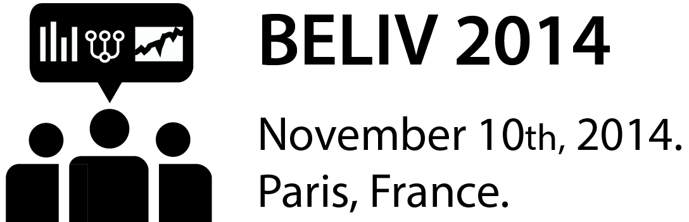

Pierre Dragicevic
Researcher in human-computer interaction at INRIA, Aviz team.
Title:
Bad Stats are Miscommunicated Stats
Summary:
When reporting on user studies, we often need to do stats. But many of
us have little training in statistics, and we are just as anxious about
doing it right as we are eager to incriminate others for any flaw we
might spot. Violations of statistical assumptions, too small samples,
uncorrected multiple comparisons—deadly sins abound. But our obsession
with flaw-spotting in statistical procedures makes us miss far more
serious issues and forget about the actual purpose of statistics. Stats
are here to help us communicate about our experimental results for the
purpose of advancing scientific knowledge. Science is a cumulative and
collective enterprise, so miscommunication, confusion and obfuscation
are much more damaging than moderately inflated Type I error rates.
In my talk, I make the case that the most common form of bad stats are miscommunicated stats. I also explain why we all have been faring terribly according to this criteria—mostly due to our blind endorsement of the concept of statistical significance. This idea promotes a form of dichotomous thinking that not only gives a highly misleading view of the uncertainty in our data, but also encourages questionable practices such as selective data analysis and various other forms of convolutions to reach the sacred .05 level. While researchers’ reliance on mechanical statistical testing rituals is both deeply entrenched and severely criticized in a range of disciplines—and has been so for more than 50 years—it is particularly striking that it has been so easily endorsed by our community. We repeatedly stress the crucial role of human judgment when analyzing data, but do the opposite when we conduct or review statistical analyses from user experiments. I believe that we can cure our schizophrenia and substantially improve our scientific production by banning p-values, by reporting empirical data using clear figures with effect sizes and confidence intervals, and by learning to provide nuanced interpretations of our results. We can also dramatically raise our scientific standards by pre-specifying our analyses, fully disclosing our results, and sharing extensive replication material online. These are small but important reforms that are much more likely to improve science than methodological nitpicking on statistical testing procedures.
All references mentioned in this talk will be available at http://www.aviz.fr/badstats.
Speaker Bio:
Pierre Dragicevic defended his PhD thesis on human-computer
interaction in Nantes, France, in 2004, after which he worked as a
post-doc at the Université Toulouse III, in the IntuiLab company, and
at the University of Toronto, Canada. In 2007, he joined the Aviz team
at Inria in France as a permanent research scientist, where he has been
working on topics such as animated visualizations, physical
visualizations, perception and motor control, and visualizations for
judgment and decision making. He has no statistical training but
knowledgeable colleagues, and co-signed many research articles with
p-values until he was forced to do a statistical analysis himself in
2012. Unsatisfied with this experience, he got interested in less
orthodox statistical methods and discovered a vast and fascinating
literature on statistical reform as well as an emerging field called
statistical cognition. In 2013, he organized a local workshop with
statistics reformer and statistical cognition researcher Geoff Cumming.
In 2014, he co-presented with Fanny Chevalier and Stéphane Huot an
alt.chi paper on a thought experiment about what would happen to
statistical significance if we ran the same HCI experiment in multiple
parallel universes. In early 2014, he decided to banish p-values from
all his publications and use only estimation—so far with success. He has
been also trying to pre-specify analyses and share full replication
material as much as possible. The few colleagues he managed to convince
so far report an average increase in life satisfaction of 2.1 on a
10-point scale, 95% CI [1.7, 3.4].